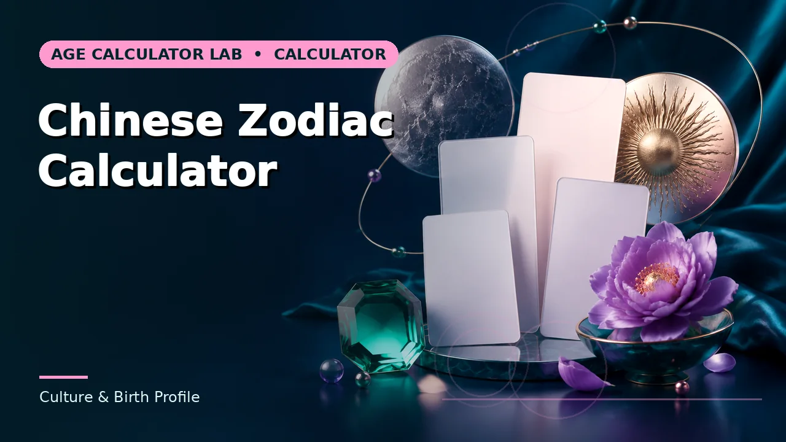

Quick answer
Kazoedoshi, sui and the Korean count share one idea — count calendar years, starting at one — but each country has moved to completed-years age at a different time and for different purposes.
One idea, several names
The traditional systems of Japan (kazoedoshi), China (虚岁, often rendered "virtual age" or sui) and Korea share a common logic. A newborn is one, and the number advances at a fixed communal point rather than on a personal anniversary. The shared premise is that age labels which calendar year you are living through, not how much time has elapsed since you arrived.
The differences are in the advancement point and in how completely each country has moved away from the system. Japan legislated for completed-years age in 1902 and reinforced it in 1950; China's official documents have used completed years for decades; South Korea made the switch most recently, in 2023. In each case the traditional count survived in cultural use long after it stopped governing paperwork.
Use this guide with the right tool: Open the East Asian Age Calculator for traditional East Asian year-count age compared with international age. If the question shifts, compare it with the Korean Age Calculator or the Chinese Zodiac Calculator.
Lunar new year versus 1 January
Where the traditional count advances matters. The Korean count and modern casual use of the Chinese count generally advance on 1 January. Older Chinese practice ties the change to Lunar New Year, which falls between 21 January and 20 February depending on the year.
That variation creates a real edge case for people born in January or early February. Under a Lunar New Year convention, a baby born in late January 2026 may still belong to the previous lunar year — which affects both the traditional age count and the zodiac animal assigned to them. If you are reconciling a family record, check which boundary the source used before assuming an error.
Why records disagree
Historical documents rarely state their convention. A grave marker, a family register or a hospital note may record a traditional age without saying so, and a modern transcription may convert it without noting that a conversion happened. The result is a record that looks precise and is quietly off by a year or two.
The practical repair is to anchor everything to a date of birth wherever one exists, and to treat any bare age in a historical record as a range rather than a point. If a document gives an age and a year but no birth date, the possible birth years usually span two or three options, not one.
Using the calculator responsibly
This calculator shows the traditional year count alongside international age so the relationship is visible rather than assumed. It is a conversion aid for reading and reconciling records, not an authority on any country's current legal definition of age.
For anything that carries consequences — visas, benefits, school enrolment, medical dosing — use completed-years age from the date of birth, and check the specific rule that applies. Where a rule genuinely uses a traditional count, it will say so.
Worked example
Try it with the dates in front of you. Where the answer sits close to a threshold, treat that as a prompt to check the rule rather than to conclude.
Common mistakes to avoid
- Assuming all East Asian systems advance on the same date. 1 January and Lunar New Year are both in use. The choice changes results for January and early-February birthdays.
- Applying a modern legal standard to a historical document. Read the record in the convention of its own time, then convert explicitly and keep both figures.
- Using traditional age for a clinical or legal purpose. Dosing, eligibility and legal capacity are defined on completed years. Use the date of birth.
Use the right calculator
Three tools cover most of what this guide describes. Each shows its working, so a result can be checked rather than trusted.

Frequently asked questions
Is kazoedoshi still used in Japan?
Rarely for official purposes. It survives mainly in traditional ceremonies, some religious observances and age-related customs.
Does the zodiac animal follow the same boundary?
In Chinese practice it follows the lunar year, so late-January and early-February birthdays need the exact Lunar New Year date for that year.
Can I convert without knowing the birth date?
Only approximately. A bare age plus a year usually implies two possible birth years, so record it as a range.